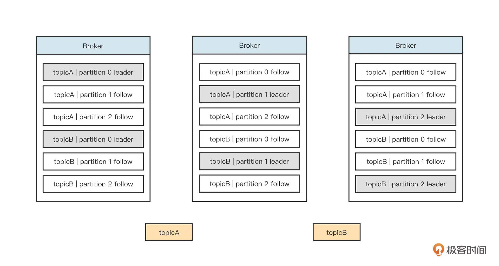
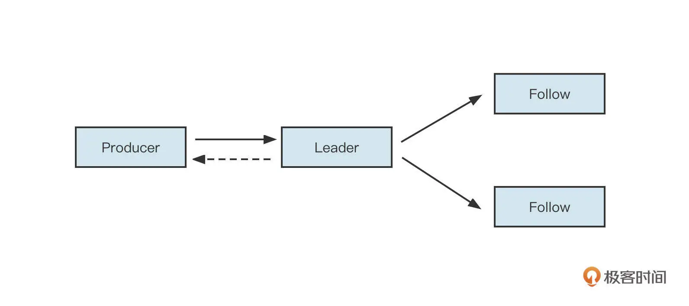
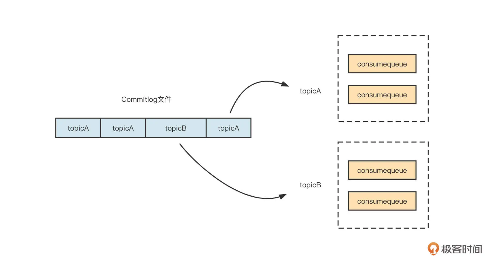
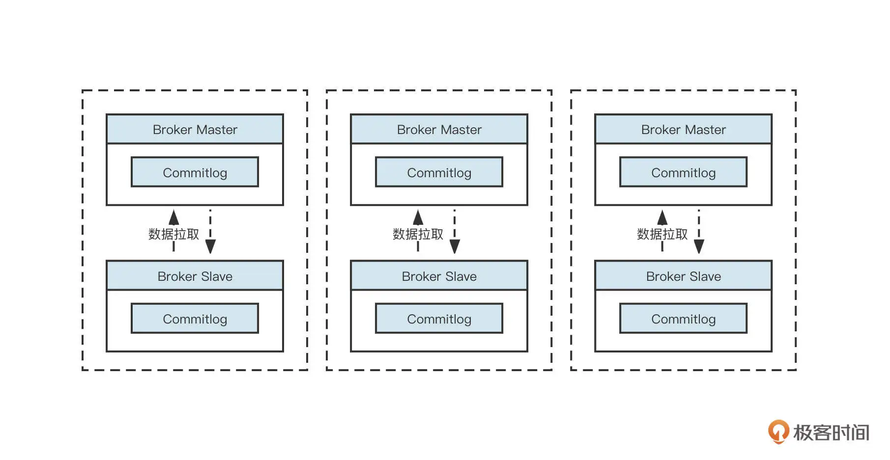
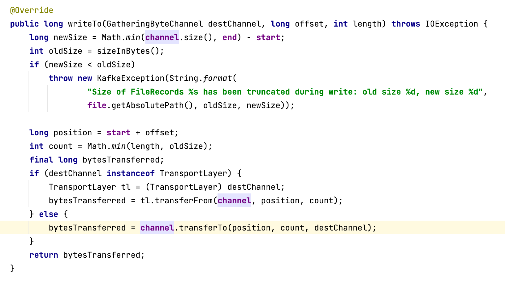
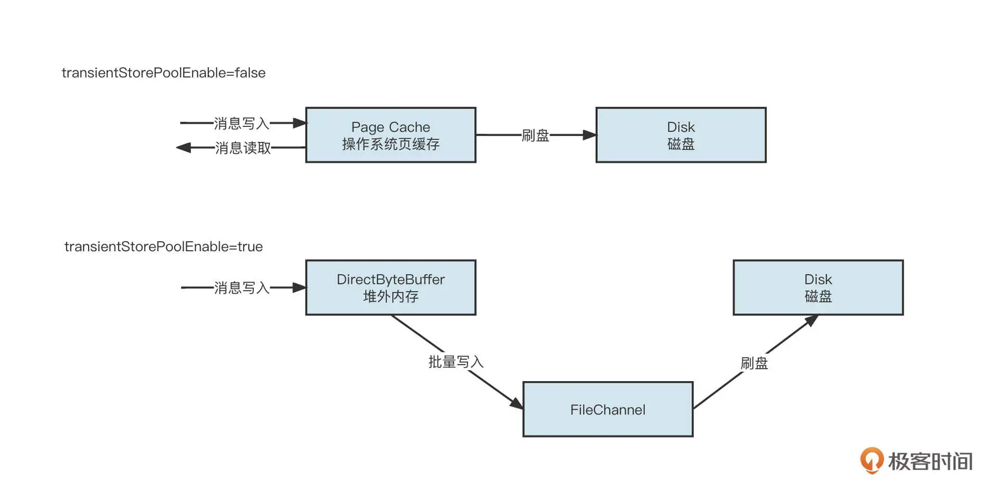
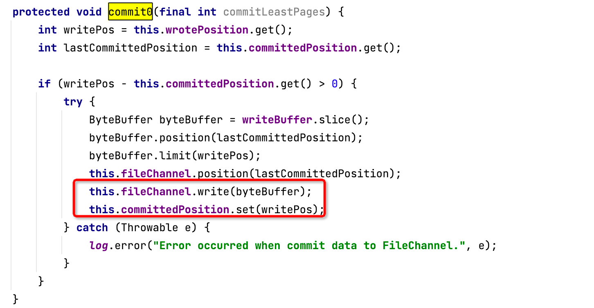
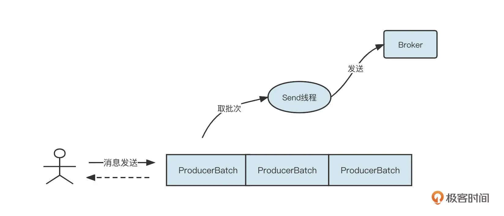

- 00 开篇词 为什么中间件对分布式架构体系来说这么重要？.md
- 01 中间件生态（上）：有哪些类型的中间件？.md
- 02 中间件生态（下）：同类型的中间件如何进行选型？.md
- 03 数组与链表：存储设计的基石有哪些？.md
- 04 红黑树：图解红黑树的构造过程与应用场景.md
- 05 多线程：多线程编程有哪些常见的设计模式？.md
- 06 锁：如何理解锁的同步阻塞队列与条件队列？.md
- 07 NIO：手撸一个简易的主从多Reactor线程模型.md
- 08 Netty：如何优雅地处理网络读写，制定网络通信协议？.md
- 08 加餐 中间件底层的通用设计理念.md
- 09 技术选型：如何选择微服务框架和注册中心？.md
- 10 设计原理：Dubbo核心设计原理剖析.md
- 11 案例：如何基于Dubbo进行网关设计？.md
- 12 案例：如何实现蓝绿发布？.md
- 13 技术选型：如何根据应用场景选择合适的消息中间件？.md
- 14 性能之道：RocketMQ与Kafka高性能设计对比.md
- 15 案例：消息中间件如何实现蓝绿？.md
- 16 案例：如何提升RocketMQ顺序消费性能？.md
- 17 运维：如何运维日均亿级的消息集群？.md
- 18 案例：如何排查RocketMQ消息发送超时故障？.md
- 19 案例：如何排查RocketMQ消息消费积压问题？.md
- 20 技术选型：分布式定时调度框架的功能和未来.md
- 21 设计理念：如何基于ZooKeeper设计准实时架构？.md
- 22 案例：使用分布式调度框架该考虑哪些问题？.md
- 23 案例：如何在生产环境进行全链路压测？.md
- 大咖助阵 高楼：我们应该如何学习中间件？.md
- 用户故事 学而时习之，不亦乐乎.md
- 用户故事 愿做技术的追梦人.md
- 用户故事 浪费时间也是为了珍惜时间.md
- 结束语 坚持不懈，越努力越幸运.md
14 性能之道：RocketMQ与Kafka高性能设计对比
你好，我是丁威。
RocketMQ 和 Kafka 是当下最主流的两款消息中间件，我们这节课就从文件布局、数据写入方式、消息发送客户端这三个维度对比一下实现 kafka 和 RocketMQ 的差异，通过这种方式学习高性能编程设计的相关知识。
文件布局
我们首先来看一下 Kafka 与 RocketMQ 的文件布局。
Kafka 的文件存储设计在宏观上的布局如下图所示：

我们解析一下它的主要特征。
文件的组织方式是“ topic + 分区”，每一个 topic 可以创建多个分区，每一个分区包含单独的文件夹。
分区支持副本机制，即一个分区可以在多台机器上复制数据。topic 中每一个分区会有 Leader 与 Follow。Kafka 的内部机制可以保证 topic 某一个分区的 Leader 与 Follow 不在同一台机器上，并且每一台 Broker 会尽量均衡地承担各个分区的 Leade。当然，在运行过程中如果 Leader 不均衡，也可以执行命令进行手动平衡。
Leader 节点承担一个分区的读写，Follow 节点只负责数据备份。
Kafka 的负载均衡主要取决于分区 Leader 节点的分布情况。分区的 Leader 节点负责读写，而从节点负责数据同步，如果 Leader 分区所在的 Broker 节点宕机，会触发主从节点的切换，在剩下的 Follow 节点中选举一个新的 Leader 节点。这时数据的流入流程如下图所示：

分区 Leader 收到客户端的消息发送请求后，可以有两种数据返回策略。一种是将数据写入到 Leader 节点后就返回，还有一种是等到它的从节点全部写入完成后再返回。这个策略选择非常关键，会直接影响消息发送端的时延，所以 Kafka 提供了 ack 这个参数来进行策略选择：
当 ack = 0 时，不等 Broker 端确认就直接返回，即客户端将消息发送到网络中就返回“发送成功”；
当 ack = 1 时，Leader 节点接受并存储消息后立即向客户端返回“成功”；
当 ack = -1 时，Leader 节点和所有的 Follow 节点接受并成功存储消息，再向客户端返回“成功”。
我们再来看一下 RocketMQ 的文件布局：

RocketMQ 所有主题的消息都会写入到 commitlog 文件中，然后基于 commitlog 文件构建消息消费队列文件（Consumequeue），消息消费队列的组织结构按照 /topic/{queue} 来组织。从集群的视角来看如下图所示：

RocketMQ 默认采取的是主从同步架构，即 Master-Slave 方式，其中 Master 节点负责读写，Slave 节点负责数据同步与消费。
值得注意的是，RocketMQ4.5 引入了多副本机制，RocketMQ 的副本机制与 kafka 的多副本两者之间的不同点是 RocketMQ 的副本维度是 Commitlog 文件，而 kafka 是主题分区级别。
我们来看看 Kafka 和 RocketMQ 在文件布局上的异同。
Kafka 中文件的布局是以 Topic/partition 为主 ，每一个分区拥有一个物理文件夹，Kafka 在分区级别实现文件顺序写。如果一个 Kafka 集群中有成百上千个主题，每一个主题又有上百个分区，消息在高并发写入时，IO 操作就会显得很零散，效果相当于随机 IO。也就是说，Kafka 在消息写入时的 IO 性能，会随着 topic 、分区数量的增长先上升，后下降。
而 RocketMQ 在消息写入时追求极致的顺序写，所有的消息不分主题一律顺序写入 commitlog 文件， topic 和 分区数量的增加不会影响写入顺序。
根据我的实践经验，当磁盘是 SSD 时，采用同样的配置，Kafka 的吞吐量要超过 RocketMQ，我认为这里的主要原因是单文件顺序写入很难充分发挥磁盘 IO 的性能。
除了在磁盘顺序写方面的差别，Kafka 和 RocketMQ 的运维成本也不同。由于粒度的原因，Kafka 的 topic 扩容分区会涉及分区在各个 Broker 的移动，它的扩容操作比较重。而 RocketMQ 的数据存储主要基于 commitlog 文件，扩容时不会产生数据移动，只会对新的数据产生影响。因此，RocketMQ 的运维成本相对 Kafka 更低。
不过，Kafka 和 RocketMQ 也有一些共同点。Kafka 的 ack 参数可以类比 RocketMQ 的同步复制、异步复制。
Kafka 的“ack 参数 =1”时，对标 RocketMQ 的异步复制，有数据丢失的风险；
kafka 的“ack 参数 =-1”时，对标 RocketMQ 的同步复制；
Kafka 的“ack 参数 =0”时，对标 RocketMQ 消息发送方式的 oneway 模式，适合日志采集场景。
在业务领域通常是不容许数据丢失的。但如果这些数据容易重推，就可以使用 ack=1，而不使用 ack=-1，因为 ack=-1 时的性能较低。
例如，我们在公司开发数据同步中间件时，都是基于数据库 Binlog 日志同步到 Es、MySQL、Oracle 等目标端，由于同步任务支持回溯，故通常将 ack 设置为 1。
数据写入方式
聊完数据文件布局，我们再来看一下 Kafka、和 RocketMQ 的服务端是如何处理数据写入的。
我们还是先来看 Kafka。
Kafka 服务端处理消息写入的代码定义在 MemoryRecords 的 writeTo 方法中，具体代码截图如下（具体是调用入口 LogSegment 的 append 方法）：

Kafka 服务端写入消息时，主要是调用 FileChannel 的 transferTo 方法，该方法底层使用了操作系统的 sendfile 系统调用。
而 RocketMQ 的消息写入支持内存映射与 FileChannel 两种写入方式，如下图所示：

也就是说，如果将参数 tranisentStorePoolEnable 设置为 false，那就先将消息写入到页缓存，然后根据刷盘机制持久化到磁盘中。如果将参数设置为 true，数据会先写入到堆外内存，然后批量提交到 FileChannel，并最终根据刷盘策略将数据持久化到磁盘中。
值得注意的是，RocketMQ 与 Kafka 都支持通过 FileChannel 方式写入，但 RocketMQ 基于 FileChannel 写入时，调用的 API 并不是 transferTo，而是先调用 writer，然后定时 flush 刷写到磁盘，具体调用入口为 MappedFile。代码截图如下：

直接调用 FileChannel 的 transferTo 方法比 write 方法性能更优，因为 transferTo 底层使用了操作系统的 sendfile 系统调用，能充分发挥块设备的优势。
根据我的实践经验，sendfile 系统调用相比内存映射多了一个从用户缓存区拷贝到内核缓存区的步骤，但当内存写入超过 64K 时， sendfile 的性能往往更高，故 Kafka 在服务端的写入比 RocketMQ 会有更好的表现。
消息发送
最后我们再从客户端消息发送这个角度看一下两款中间件的差异。
Kafka 消息发送客户端采用的是双端队列，还引入了批处理思想，它的消息发送机制如下图所示：

当客户端想要调用 Kafka 的消息发送者发送消息时，消息会首先存入到一个双端队列中，双端队列中单个元素为 ProducerBatch，表示一个发送批次，其最大值受参数 batch.size 控制，默认为 16K。
然后，Kafka 客户端会单独开一个 Send 线程，从双端队列中获取发送批次，将消息按批发送到 Kafka 集群中。Kafka 还引入了 linger.ms 参数来控制 Send 线程的发送行为，代表批次要在双端队列中等待的最小时长。
如果将 linger.ms 设置为 0，表示立即发送消息；如果将参数设置为大于 0，那么发送线程在发送消息时只会从双端队列中获取等待时长大于该值的批次。 注意，linger.ms 参数会延长响应时间，但有利于增加吞吐量。有点类似于 TCP 领域的 Nagle 算法。
Kafka 的消息发送，在写入 ProducerBatch 时会按照消息存储协议组织数据，在服务端可以直接写入到文件中。
RocketMQ 的消息发送在客户端主要是根据路由选择算法选择一个队列，然后将消息发送到服务端。消息会在服务端按照消息的存储格式进行组织，然后进行持久化等操作。
Kafka 相比 RocketMQ 有一个非常大的优势，那就是它的消息格式是在客户端组装的，这就节约了 Broker 端的 CPU 压力，这两款中间件在架构方式上的差异有点类似 ShardingJDBC 与 MyCat 的区别。
Kafka 在消息发送端的另外一个特点就是，引入了双端缓存队列。可以看出，Kafka 的设计始终在追求批处理，这能够提高消息发送的吞吐量，但与之相对的问题是，消息的响应时间延长了，消息丢失的可能性也加大（因为 Kafka 追加到消息缓存后会返回“成功”，但是如果消息发送方异常退出，会导致消息丢失）。
我们可以将 Kafka 中 linger.ms=0 的情况类比 RocketMQ 消息发送的效果。但 Kafka 通过调整 batch.size 与 linger.ms 两个参数来适应不同场景，这种方式比 RocketMQ 更为灵活。例如，日志集群通常会调大 batch.size 与 linger.ms 参数，充分发挥消息批量发送带来的优势，提高吞吐量；但如果有些场景对响应时间比较敏感，就可以适当调低 linger.ms 的值。
总结
好了，这节课就讲到这里。刚才，我们从文件布局、服务端数据写入方式、客户端消息发送方式三个维度，对比了 Kafka 和 RocketMQ 各自在追求高性能时所采用的技术。综合对比来看，在同等硬件配置一下，Kafka 的综合性能要比 RocketMQ 更为强劲。
RocketMQ 和 Kafka 都使用了顺序写机制，但相比 Kafka，RocketMQ 在消息写入时追求极致的顺序写，会在同一时刻将消息全部写入一个文件，这显然无法压榨磁盘的性能。而 Kafka 是分区级别顺序写，在分区数量不多的情况下，从所有分区的视角来看是随机写，但这能重复发挥 CPU 的多核优势。因此，在磁盘没有遇到瓶颈时，Kafka 的性能要优于 RocketMQ。
同时，Kafka 在服务端写入时使用了 FileChannel 的 transferTo 方法，底层使用 sendfile 系统调用，比普通的 FileChannel 的 write 方法更有优势。结合压测效果来看，如果待写入的消息体大小超过 64K，使用 sendfile 的块写入方式甚至比内存映射拥有更好的性能。
在消息发送方面，Kafka 的客户端则充分利用了批处理思想，比 RocketMQ 拥有更高的吞吐率。
课后题
最后，我还是给你留一道思考题。
通过了解 RocketMQ 和 Kafka 的实现机制，我们知道 RocketMQ 还有很大的进步空间。你认为应该如何优化 RocketMQ？
欢迎你在留言区与我交流讨论，我们下节课见！
© 2019 - 2023 Liangliang Lee. Powered by gin and hexo-theme-book.